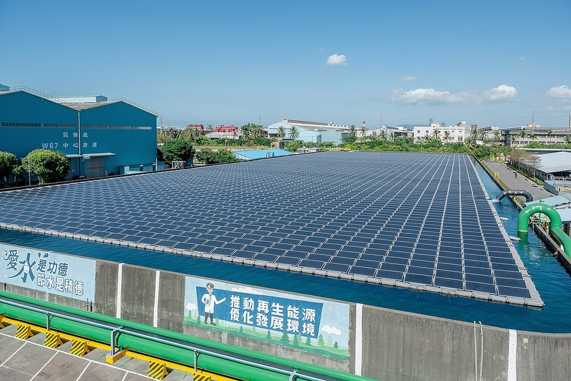
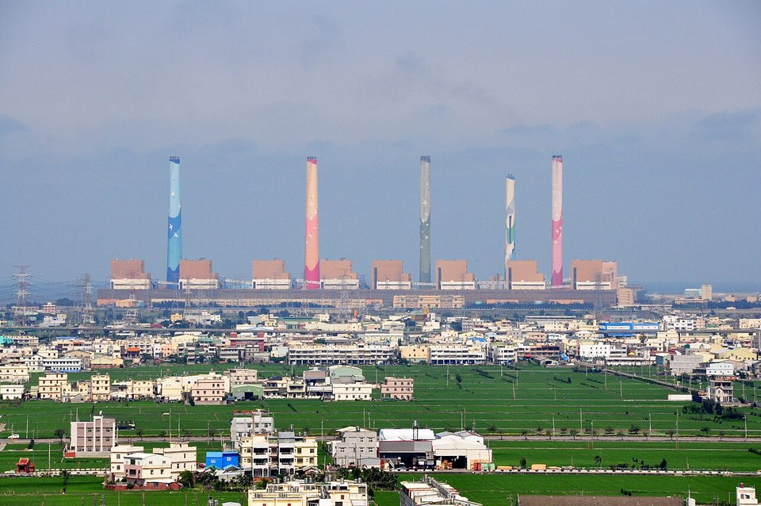
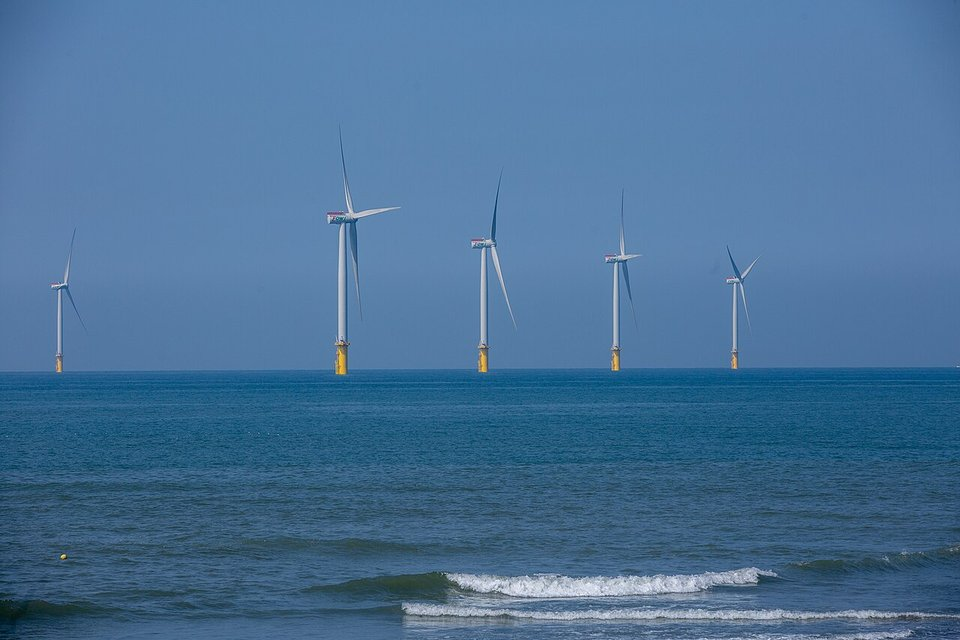

CARBON NEUTRALITY · TAIWAN · 2026.10
碳有價元年：台灣碳中和 2026 進度與鋼鐵業壓力
鋼鐵潮流工作室 · 發布 2026.10.04

本期重點
2026 年是台灣「碳有價」元年：碳費首次實際收費 49.7 億元，第二階段費率審議與 2028 年碳交易試辦接續登場。但綠電與減碳進度雙雙落後目標，而鋼鐵業目前的碳成本幾乎是象徵性的，真正的壓力在 2028 年之後。
- 碳費首年收 49.7 億元。 半導體繳 22 億元居冠，鋼鐵業約占 8%；九成以上廠商適用優惠費率。
- 費率準備調漲。 第二屆碳費審議會 9 月成軍，討論中的方案是 2030 年漲到每噸 1,200 元，下一階段可能是 600 元。
- 綠電落後。 2025 年再生能源發電只占 13.1%，遠低於 20% 目標；燃煤仍占 35.4%。
- 中鋼碳費約 1.75 億元。 實繳每噸約 10 元，與歐盟碳價差距懸殊；費率、係數與碳交易一旦調整，成本可能放大數倍到數十倍。
關鍵數字
首年碳費49.7 億元2026/6/1 截止，461 廠、240 家企業全數繳清
一般費率每噸 300 元優惠費率 A 級 50 元、B 級 100 元
中鋼實繳每噸約 10 元優惠 50 元 × 碳洩漏係數 0.2，全年約 1.75 億元
2025 綠電占比13.1%目標 20%，經濟部估 2026/11 起達標
2035 減碳目標較 2005 年減 38%±2%NDC 3.0，2050 淨零
碳交易2028 年試辦總量管制，與歐洲能源交易所合作
國家目標與實際進度
| 項目 | 目標 | 現況 |
|---|---|---|
| 2025 年減碳 | 較 2005 年減 10% | 估計約減 9%，恐未達標；能源部門排放首度下降 |
| 2035 年減碳（NDC 3.0） | 較 2005 年減 38%±2% | 2025 年核定，官方形容為「登月計畫」 |
| 電力結構（2025） | 燃氣 50%、燃煤 30%、綠電 20% | 燃氣 47.8%、燃煤 35.4%、綠電 13.1%、核能 1.1% |
| 太陽光電（2025） | 20 GW | 15.5 GW |
| 離岸風電 | 2025 年 5.7 GW | 2025 年底 3.6 GW；2026 年 6 月第 500 座風機完工，累計 4.8 GW，全球第五 |
| 再生能源占比 | 20% | 經濟部估 2026 年 11 月起達 20%（全年平均約 18.9%）；2028 年 23.4%、2030 年約 30% |

碳費元年：誰繳了多少
碳費一般費率每噸 300 元；提出自主減量計畫並經審核者適用優惠費率（A 級 50 元、B 級 100 元），高碳洩漏風險產業再乘上碳洩漏係數，第一期為 0.2。首期審核結果：64 廠適用 A 級、338 廠適用 B 級，僅 28 廠繳一般費率。
碳費收入規劃 20 億元用於減碳與調適補助、5 億元用於貸款信保與利息補貼、2 億元用於公正轉型。
下一步：費率調漲與碳交易
- 第二階段費率。 第二屆碳費審議會任期 2026 年 3 月至 2028 年 2 月，9 月公布名單，將決定 2027 年排放量適用的費率（2028 年繳費）。第一屆曾建議每兩年調漲一次、2030 年達每噸 1,200 元，下一階段可能是 600 元；環境部長則表示「經濟情勢與兩年前不同」，調幅仍有變數。
- 碳交易試辦。 環境部預計 2026 年下半年提出總量管制交易試行方案，2028 年試辦，並與歐洲能源交易所（EEX）合作建置平台。碳權交易所的國內碳權交易至今仍相當冷清。
- 歐盟 CBAM。 2026 年 1 月 1 日進入正式期，2027 年起歐盟進口商須依 2026 年進口量購買憑證。中鋼約一成外銷到歐洲，台灣碳費能否抵扣仍待台歐協商。

鋼鐵業與中鋼
- 碳費約 1.75 億元。 中鋼取得優惠費率 50 元，乘上 0.2 碳洩漏係數，實繳每噸約 10 元。董事長黃建智表示將內部吸收、「絕對沒有要轉嫁給下游客戶」，並說台灣「地小、資源少，不需要當第一棒破風者」。
- 減碳目標。 2030 年減碳 25%（董事長表示「非常有信心」）、2050 年碳中和。
- 外界批評。 台灣氣候行動網評估中鋼 2023 年碳排強度每噸鋼 2.33 噸 CO₂e，在亞洲 11 家鋼廠中第二高；2030 年目標基準年由 2018 年改為 2021 年引發可信度質疑；2025–2030 年編列 170 億元低碳投資的同時，又投入 77 億元改造 4 號高爐。
碳費敏感度：費率一變，成本放大
以中鋼約 1.75 億元碳費、實繳每噸約 10 元回推，計費排放量約 1,750 萬噸。在計費量不變的假設下，不同實質費率對應的年碳費如下（本刊估算，非官方數字）：
| 情境 | 實質費率（元／噸） | 年碳費估算 |
|---|---|---|
| 現行：優惠 50 元 × 係數 0.2 | 10 | 約 1.75 億元 |
| 優惠費率翻倍、係數不變 | 20 | 約 3.5 億元 |
| 係數提高到 0.6 | 30–60 | 約 5–10 億元 |
| 一般費率 300 元、無係數 | 300 | 約 52 億元 |
| 一般費率 600 元、無係數 | 600 | 約 105 億元 |
現行每噸 10 元，與歐盟碳價（每噸約新台幣 2,000 元以上）相差兩個數量級。真正的風險在 2028 年後三件事同時發生：第二階段費率調漲、碳洩漏係數逐步取消、碳交易總量管制上路。
對台灣鋼鐵業的觀察
- 現在便宜，不代表一直便宜。 碳費設計採「先低後高」，鋼廠若只滿足於優惠費率而延後低碳投資，2030 年前後可能面臨成本急升。
- 綠電進度決定電爐路線的減碳效果。 電爐鋼的排放大多來自用電，燃煤占比降不下來，電爐的減碳優勢就打折。
- CBAM 抵扣是關鍵外交題。 台灣碳費若能被歐盟認可抵扣，可降低出口鋼品的雙重負擔，但前提是碳價具一定水準。
- 碳資訊揭露成為新門檻。 IFRS S2 氣候揭露上路後，減碳路徑的可信度與投資一致性，將直接影響鋼廠的融資與評等。
觀察重點
- 第二階段碳費費率與碳洩漏係數的審議結果。
- 2028 年碳交易試辦的總量設定與配額分配方式。
- 台灣碳費能否抵扣歐盟 CBAM 憑證。
- 中鋼 2030 年減碳 25% 的進度，以及電爐、DRI 等低碳產線的投資決策。
- 再生能源 20% 是否如期在 2026 年 11 月達標。
資料來源
- 2026碳費進帳49.7億元、半導體繳22億居冠（CSR@天下）
- 碳費明年估收49.7億元 環境部：2028年試行碳交易制度（聯合報，2026-06-19）
- 碳費第二階段費率 攻防焦點（經濟日報）
- 肩負調整第二階段費率任務 碳費審議委員第二屆名單出爐（聯合報，2026-09-08）
- 碳費年繳2億元以內 中鋼董座：減碳別當破風者（自由財經，2026-05-22）
- 中鋼碳排強度亞洲第二高！（ESG永續台灣，2026-05-22）
- 2025能源統計公布：燃煤未降至30% 綠電僅13%（環境資訊中心）
- 再生能源發電占比 2026年11月起可達20%（經濟部）
- 台灣離岸風電完成第 500 座風機（TechNews，2026-06-15）
- 碳關稅衝擊浮現／歐盟碳稅上路（聯合報）
- 2035年減碳目標38%±2% 我國NDC3.0出爐（中小企業減碳服務站）
內容僅供產業資訊參考，不構成投資建議。新聞版權屬原出處所有。